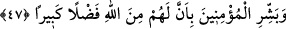

Bazıları şöyle demiştir: “Burada “kandil”den murad güneş, “nur saçan”dan maksad
ise aydır. Hz. Peygamber (s.a.) için güneşin ve ayın her ikisinin de vasfı toplanmıştır.
Allah Teâlâ’nın şu kavli de buna delâlet eder: “Gökte burçları var eden, onların
içinde bir çerağ (güneş) ve nurlu bir ay barındıran Allah, yüceler yücesidir.” (el-
Furkan, 25/61) Bu mânâya yorulması, güneş ve ayın nurunun/ışığının kandilin ışığından
daha tam olması sebebiyledir.
Denilir ki: Allah Teâlâ, Hz. Peygamber (s.a.)’i güneş, ay, veya yıldız diye
isimlendirmeyip “kandil” diye isimlendirmiştir. Çünkü kıyamet gününde güneş, ay ve
yıldız olmayacaktır. Yine güneş ve ay bir yerden başka bir yere nakledilemezler. Kandil
ise böyle değildir. Görmez misin ki Allah Teâlâ Rasûlullah (s.a.)’i Mekke’den
Medîne’ye nakletmiştir.
47. Allah’tan büyük bir lütfa ereceklerini mü’minlere müjdele.
Ümmetinin hallerini gözet; diğer ümmetlerin mü’minlerine göre rütbe ve şeref
bakımından veya lutuf ve ihsan yoluyla amellerinin ecirlerinde ziyadelik konusunda
“Allah’tan büyük bir lutfa ereceklerini mü’minlere müjdele.”
Rivâyete göre eski ümmetlerde bir haseneye bir sevap verilirdi. Bu ümmette ise bir
haseneye en az on mislinden sınırsız misline kadar sevab verilir. Bazıları şöyle
demiştir: “Büyük bir lutuf”, onların kendi amellerinden daha fazla, büyük bir hediye,
yâni Hak ile buluşma devletidir ki daha büyük bir nîmet ve daha hoş bir karşılıktır.
Keşfü’l-esrâr’da şöyle denir: (Bu büyük lutuf), duâ edenin duâsını kabul etmek,
isteyene vermek, çalışana yardım etmek, şükredene arttırmak, itâat edene sevab vermek,
isyan edenin günahını silmek, pişman olana merhamet, sevene kerâmet/ikram etmek ve
âşık olana buluşma ve görüşmedir.
İbn Abbâs (r.a.) şöyle demiştir: “Bu âyet nâzil olunca Rasûlullah (s.a.) Hz. Ali ve
Muâz (r.a.)’ı çağırıp onları Yemen’e gönderdi. Onlara “Gidin, insanları müjdeleyin,
nefret ettirmeyin. Kolaylaştırın zorlaştırmayın. Çünkü bana “Allah’tan büyük bir lutfa
ereceklerini mü’minlere müjdele.” âyeti indi.” buyurdu ve bu âyeti okudu.[252] Nitekim
Fethu’r-Rahmân’da böyle geçmektedir.
Bu âyet ve hadîs ile Allah Teâlâ’nın “Sen yine de öğüt ver. Çünkü öğüt mü’minlere
fayda verir.” (ez-Zâriât, 52/55) kavli, Allah Teâlâ’nın rızâsı istendiğinde vaaz etmekte
bir beis olmadığına delâlet etmektedir.
İbn Mes‘ûd (r.a.) her Perşembe günü akşamı, öğüt ve nasihat verirdi. Duâlar eder,
havf ve recâdan (korku ve ümid) bahsederdi. Sözünün hepsini korkuya veya ümide
ayırmazdı.
Bir mazereti dolayısıyla vaaz edemezse yerine bir başkasını gönderme imkânı varsa